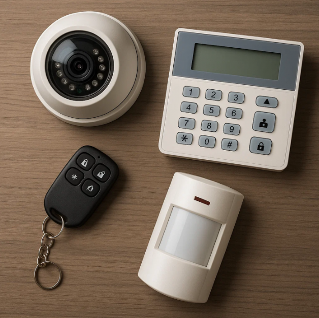

Кажется, что может быть проще: купил камеры, повесил по углам, подключил к регистратору — и порядок. На практике именно такой подход приводит к тому, что владельцы тратят десятки тысяч рублей на систему, которая не может распознать лицо грабителя или номер машины. Мы собрали семь самых частых и грубых ошибок монтажа видеонаблюдения. Если вы узнали в них свою систему — срочно исправляйте, чтобы в нужный момент система работала так, чтобы от нее был ожидаемый результат.

Ошибка первая: камера смотрит в небо или в землю
Самая распространенная и одновременно самая глупая ошибка. Монтажник закрепил камеру под козырьком, но не проверил угол наклона. В итоге половина кадра — это небо или потолок, а зона, где реально ходят люди, попадает только нижним краем. Или наоборот: камера направлена слишком низко — видит только ноги и асфальт. Лицо в кадр не попадает.
Как правильно? После установки каждой камеры нужно сесть перед контрольным монитором и отрегулировать угол так, чтобы в кадре было пространство от колен до макушки человека, стоящего в трех-пяти метрах. Небо должно занимать не более пятой части кадра. И обязательно проверять картинку в разное время суток — ночью освещение может изменить восприятие.
Ошибка вторая: экономия на разрешении — нельзя узнать лицо
Многие покупают дешевые комплекты с камерами 1 или 2 мегапикселя (720p или 1080p), думая, что «для порядка хватит». На деле при установке на высоте 4-5 метров лицо человека на такой камере будет занимать всего несколько пикселей. Увеличить изображение невозможно — оно распадется на квадраты.
Что нужно? Для распознавания лиц в стандартных условиях (высота 3 метра, дистанция 5 метров) нужно минимум 4 мегапикселя. А лучше 5-8 Мп. Для номеров автомобилей — от 4 Мп с хорошей оптикой. Не ведитесь на маркетинговые уловки с «цифровым зумом» — это просто растягивание картинки, никакой детализации он не дает. Важна физическая матрица и объектив.
Ошибка третья: ИК-подсветка слепит и освещает паутину
Ночная съемка — главная слабость дешевых систем. Типичная картина: на записи видно только яркое белое пятно в центре, а по краям — тьма. Или подсветка отражается от веток, проводов, пыли на объективе, создавая «снежную бурю».
Причины: слишком мощная ИК-подсветка для маленького помещения, грязный объектив, близко расположенные препятствия (паутина, листья, капли дождя). Также часто камеру вешают за стеклом — инфракрасный свет отражается от стекла обратно в объектив, и камера слепнет. Решение: использовать камеры с регулируемой подсветкой, регулярно протирать объективы, не ставить камеру за стекло без специального уплотнения. Для улицы лучше выбирать модели с ICR-фильтром, который автоматически убирает ИК-засветку днем.
Ошибка четвертая: мертвые зоны из-за неправильного выбора объектива
Широкоугольные камеры (2.8 мм) дают угол обзора почти 90-100 градусов, но человек на расстоянии 10 метров превращается в маленькую точку. Узкоугольные (6-12 мм) позволяют разглядеть детали, но охватывают маленькую зону. Многие ставят везде одинаковые объективы — и получают либо «рыбий глаз» без деталей, либо туннельное зрение.
Как избежать? Зонируйте объект. Входную дверь, кассу, ворота — перекрывайте камерой с фокусным расстоянием 6-8 мм. Общую территорию, коридоры — 2.8-4 мм. Идеально использовать вариофокальные объективы (с регулировкой фокусного расстояния), но они дороже. Еще вариант — одна PTZ-камера с поворотом, но она не может одновременно смотреть в две стороны.
Ошибка пятая: установка на гипсокартон или пластик без закладной
Камера весит 300-500 грамм, но при вибрации (от проезжающих машин, хлопков дверей) или случайном ударе она может вырвать крепление из гипсокартона. Особенно если монтажник использовал обычный дюбель-бабочку, а не закладную металлическую пластину. Результат: камера висит на проводах или разбита.
Правило: на гипсокартон, пластик, пустотелые блоки камеру крепят только через сквозное металлическое основание, которое распределяет нагрузку. Для уличных камер обязательны анкерные болты глубиной не менее 6-8 см в бетон или кирпич. Не экономьте на кронштейнах — дешевые алюминиевые часто гнутся от ветра, меняя угол обзора.
Ошибка шестая: отсутствие резервного питания — камеры слепнут при отключении света
Воры часто отключают электричество на вводном щитке перед проникновением. Если ваша система видеонаблюдения питается от обычной розетки без ИБП (источника бесперебойного питания), то в самый ответственный момент вы получите черный экран. Даже регистратор без батарейки потеряет настройки.
Что делать? Устанавливать ИБП, способный питать регистратор и камеры хотя бы 15-30 минут. Для дома достаточно недорогого линейно-интерактивного ИБП на 600-1000 ВА. Для бизнеса — более мощные системы с возможностью подключения внешних аккумуляторов. Также полезно настроить регистратор на отправку уведомлений при пропадании питания. И не забывайте раз в год проверять состояние аккумуляторов в ИБП.
Ошибка седьмая: кабели не подписаны и не защищены
Монтажник проложил кабели, все подключил, система работает. Через год одна камера вышла из строя. Техник приезжает на объект и видит пучок из десяти одинаковых серых проводов без маркировки. Методом «тыка» он перебирает соединения, тратит часы на поиск нужного кабеля — а вы платите за эти часы.
Правильный монтаж подразумевает: маркировку каждого кабеля на обоих концах (термоусадочные трубки с номерами или несмываемый маркер), аккуратную прокладку в кабель-каналах или гофре, защиту уличных кабелей от грызунов и УФ-излучения. Также нельзя прокладывать видеокабели рядом с силовыми проводами (220В) — будут наводки и помехи. Минимальное расстояние — 30 см, а лучше использовать экранированный кабель.
Дополнительная ошибка: не настроены зоны детекции движения
Система установлена, но регистратор настроен по умолчанию. В результате он записывает все подряд: пролетевшую муху, тень от облака, качающиеся ветки. Жесткий диск быстро заполняется мусором, а нужное событие (ночной приход вора) может не записаться из-за нехватки места. Либо наоборот: чувствительность слишком низкая, и движение не срабатывает.
Решение: настройте маски и зоны детекции. Выделите только те области, где реально ожидается движение (вход, проход, окна). Исключите деревья, дорогу с машинами, блики фар. Установите разумные размеры объекта и интервалы между срабатываниями. И обязательно проверьте, что запись идет по событию (детектор движения) с пред-записью за 5-10 секунд до события.
Итог: как не превратить видеонаблюдение в бесполезную игрушку
Профессиональный монтаж — это не просто повесить камеру и воткнуть вилку в розетку. Это проектирование: расчет углов, выбор объективов, трассировка кабелей с учетом помех, настройка детекции и удаленного доступа, резервное питание, защита от вандалов и погоды. Если вы сэкономили на монтаже и сделали всё сами — хотя бы проверьте этот список и исправьте очевидные косяки. Помните: плохо работающая система хуже, чем её отсутствие. Потому что она создает ложное чувство безопасности, а в критический момент подводит. Доверяйте монтаж профессионалам или подходите к нему со всей ответственностью.